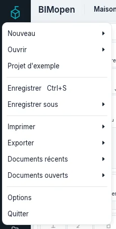
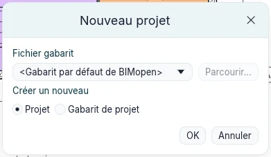
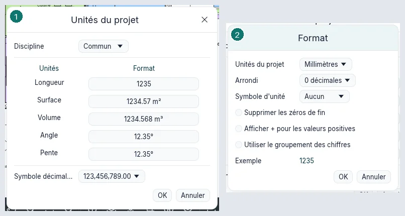
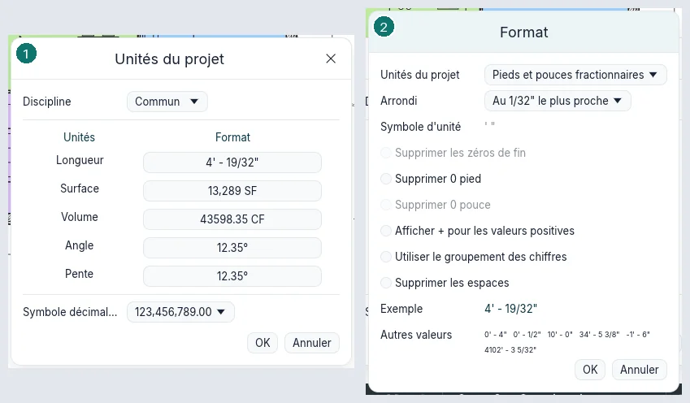
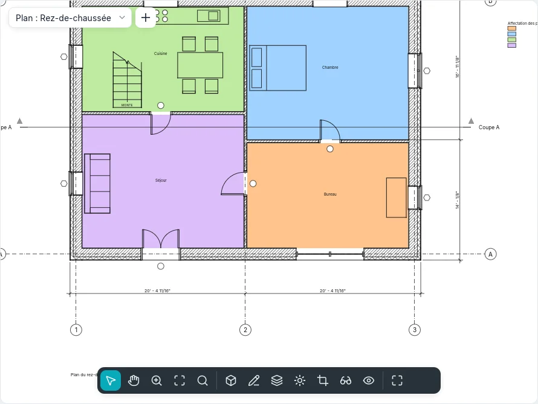
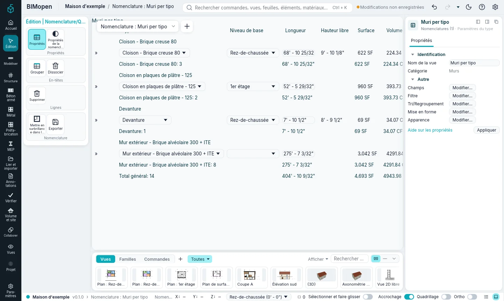
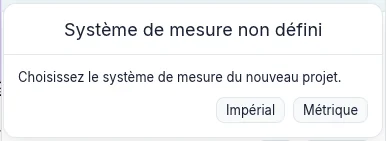
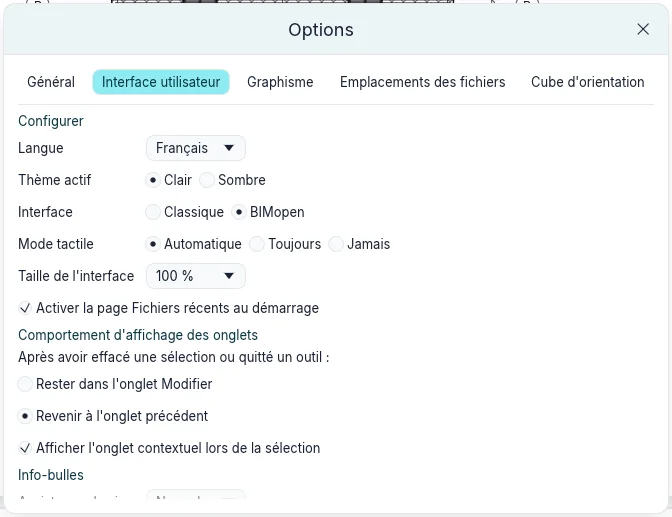
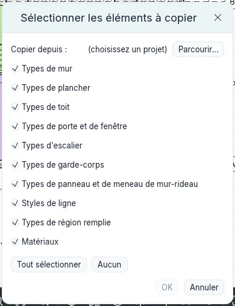

Projets et fichiers
Ce chapitre décrit comment un projet est créé, ouvert, enregistré et échangé avec d'autres programmes, ses paramètres et les options de BIMopen lui-même.

Créer un projet
menu de l'application ➤ Nouveau ➤ Projet… ouvre Nouveau projet :
- Fichier gabarit : le gabarit par défaut de BIMopen, ou celui défini dans Options ➤ Emplacements des fichiers ; le Gabarit impérial de BIMopen (voir Unités impériales) ; un fichier gabarit choisi avec Parcourir… ; ou Aucun, qui part de deux niveaux et d'un type de chaque sorte et demande le système de mesure : Impérial ou Métrique.
- Créer un nouveau : Projet ou Gabarit de projet.

Un projet créé à partir d'un gabarit a tout ce qu'avait le gabarit : types, paramètres, vues, feuilles, informations sur le projet et configurations d'impression. L'enregistrer demande un nom, de sorte que le gabarit n'est pas écrasé.
Gabarits
Un gabarit est un fichier .bimtpl. menu de l'application ➤ Enregistrer sous ➤ Gabarit…
enregistre le projet ouvert comme gabarit ; un projet créé comme Gabarit de projet, ou un
gabarit ouvert, est lui aussi enregistré comme gabarit.
Ouvrir un projet
Ctrl+O ou menu de l'application ➤ Ouvrir… ouvre un projet. menu de l'application ➤ Documents récents liste les derniers projets, le plus récent en premier ; une punaise garde un projet dans la liste. Sans fichier, BIMopen démarre sur Fichiers récents, avec les projets récents, Ouvrir…, Nouveau et le Projet d'exemple (sauf si Activer la page Fichiers récents au démarrage est décoché dans les options). Déposer un fichier de projet sur la fenêtre l'ouvre aussi.
Un projet déjà ouvert dans une autre fenêtre de BIMopen s'ouvre en lecture seule : Enregistrer demande un nouveau nom. Si BIMopen s'est arrêté sans enregistrer (un plantage, une coupure de courant), rouvrir le projet ramène le travail non enregistré sous forme de modifications non enregistrées.
Enregistrer
Ctrl+S, ou un clic sur l'état d'enregistrement dans la barre supérieure, enregistre le projet ; jusque-là, le fichier reste tel qu'il a été enregistré la dernière fois, et la barre supérieure indique Modifications non enregistrées. menu de l'application ➤ Enregistrer sous ➤ Projet… l'écrit dans un nouveau fichier et continue dans celui-ci.
Enregistrer sous ➤ Options… ouvre Options d'enregistrement du fichier :
Nombre maximal de sauvegardes garde autant de versions antérieures à côté du fichier
(house.0001.bimopen, house.0002.bimopen…), en supprimant la plus ancienne ;
Compacter le fichier réécrit le fichier sans ses parties obsolètes au prochain
enregistrement.
Quand un projet modifié reste non enregistré pendant l'intervalle défini dans Options ➤ Général (Intervalle de rappel d'enregistrement, 30 minutes au départ), Rappel d'enregistrement propose de l'enregistrer, de ne pas l'enregistrer, ou de changer l'intervalle.
Un seul projet est ouvert à la fois : le projet ouvert prend la place du précédent, dont les vues se ferment avec lui. Ouvrir le projet déjà ouvert le laisse tel quel, s'il n'a pas de modifications non enregistrées ; avec des modifications, répondre Non à la question de les enregistrer les abandonne et rouvre le fichier tel qu'enregistré la dernière fois, comme le fermer sans enregistrer puis le rouvrir.
Avant Nouveau, Ouvrir…, un document récent, un fichier déposé, open dans la ligne de
commande, le projet d'exemple, ou la fermeture de la fenêtre, un projet modifié demande
Enregistrer les modifications de … ? : Oui l'enregistre, Non abandonne les
modifications, Annuler le garde ouvert.
Dans le navigateur, Ouvrir… utilise le sélecteur de fichiers du navigateur, et Enregistrer télécharge le fichier ; les sauvegardes, la récupération après plantage et l'ouverture en lecture seule demandent un fichier sur disque et n'existent que sur le poste de travail.
Paramètres du projet
Informations sur le projet
Paramètres ➤ Paramètres ➤ Informations sur le projet définit le nom, le numéro, le client, l'adresse, la date d'émission et l'état du projet : les cartouches de toutes les feuilles les montrent.
Unités du projet
Paramètres ➤ Paramètres ➤ Unités du projet liste les grandeurs (longueur, surface, volume, angle, pente et les autres) avec un exemple de chacune, et le Symbole décimal/groupement des chiffres. Format… d'une grandeur définit son unité, son Arrondi (un nombre de décimales, ou Personnalisée avec un Facteur d'incrément, par exemple 5 mm), son Symbole d'unité, Supprimer les zéros de fin, le signe plus des valeurs positives et le groupement des chiffres.

Unités impériales
Dans Format…, les unités d'une longueur sont en deux groupes, Métrique et Impérial :
Pieds et pouces fractionnaires (5' - 6 1/2"), Pouces fractionnaires (66 1/2"),
Pieds décimaux et Pouces décimaux. Les surfaces peuvent être en Pieds carrés,
Pouces carrés ou Acres, les volumes en Pieds cubes, Pouces cubes ou Yards
cubes, les pentes en Hauteur/12" ou en rapport. Avec les fractions, l'Arrondi est au
pouce le plus proche ou au 1/2" à 1/256" le plus proche ; une valeur qui, arrondie, atteint 12"
passe dans les pieds : à 1/16", 11 63/64" se lit 1' - 0". Supprimer 0 pied écrit 4" au
lieu de 0' - 4", Supprimer les espaces écrit 1'-2" au lieu de 1' - 2", et le Symbole
d'unité choisit entre ' et ft, ou entre ft² et SF. Autres valeurs montre le format
sur quelques valeurs de plus.
Le Format du champ… d'un champ de nomenclature et le Format des unités d'un type de cote ont les mêmes champs, en plus de Utiliser les paramètres du projet : un métré peut donner des volumes en yards cubes dans un projet en pieds cubes, et un type de cote pour les détails peut arrondir à 1/32" là où les plans arrondissent à 1/16".
Le modèle reste en mètres : changer les unités change la façon dont les valeurs s'affichent et se saisissent, jamais la géométrie. Passer un projet du métrique à l'impérial et retour laisse chaque élément là où il était.

Dans un projet en pieds et pouces, les échelles des vues sont les échelles architecturales, de
12" = 1'-0" à 3/64" = 1'-0", et les échelles d'ingénierie, de 1" = 10'-0" à
1" = 100'-0" : dans la barre de la vue, dans les Propriétés et sur les feuilles. Une échelle qui
n'est ni l'une ni l'autre s'affiche comme un rapport.
| Échelle | Rapport | Usage courant |
|---|---|---|
12" = 1'-0" |
1:1 | détails grandeur nature |
6" = 1'-0" |
1:2 | assemblages et nœuds complexes |
3" = 1'-0" |
1:4 | détails de maçonnerie et de menuiserie |
1 1/2" = 1'-0" |
1:8 | détails de composants et de fenêtres |
1" = 1'-0" |
1:12 | détails de construction courants |
3/4" = 1'-0" |
1:16 | nœuds structurels |
1/2" = 1'-0" |
1:24 | coupes de mur et élévations partielles |
3/8" = 1'-0" |
1:32 | plans de cuisines et de salles de bains, détails agrandis |
1/4" = 1'-0" |
1:48 | le standard architectural pour plans et coupes |
1/8" = 1'-0" |
1:96 | le standard d'ingénierie et des fluides, plans généraux |
3/32" = 1'-0" |
1:128 | plans de grands bâtiments commerciaux |
1/16" = 1'-0" |
1:192 | plans de repérage et implantations générales |
3/64" = 1'-0" |
1:256 | plans de masse de très grands sites |
1" = 10'-0" |
1:120 | plans de génie civil et de site |
1" = 20'-0" |
1:240 | plans de lotissement |
1" = 30'-0" |
1:360 | travaux de génie civil et réseaux |
1" = 40'-0" |
1:480 | relevés topographiques et routiers |
1" = 50'-0" |
1:600 | urbanisme et plans de situation |
1" = 60'-0" |
1:720 | relevés territoriaux |
1" = 100'-0" |
1:1200 | plans cadastraux |


Le Gabarit impérial de BIMopen a les mêmes types que le gabarit métrique, aux dimensions commerciales des États-Unis : murs à montants bois 2x4 et 2x6, en blocs de 8" et briques, à montants métalliques ; portes de 30" à 36" x 80" ; fenêtres avec allège à 3'-0" ; escaliers avec des contremarches d'au plus 7 3/4" et des girons d'au moins 10" ; garde-corps de 36" et 42". Les longueurs et les cotes sont arrondies au 1/32", les incréments d'accrochage des cotes linéaires sont 4', 1', 6" et 1", la grille du plan de travail est de 4', les plans sont au 1/8" = 1'-0" et les textes ont 3/32" et 1/8" de haut. Ce sont des points de départ : chacun se change dans le projet. Changer les unités d'un projet ne renomme pas ses types.
Conseil : pour des plans lisibles sur le chantier, donnez aux types de cote un arrondi plus large : dans les Paramètres du type d'un type de cote, Format des unités ouvre Format ; décochez Utiliser les paramètres du projet et arrondissez au 1/16" ou au 1/8".

Saisir des longueurs
Une longueur saisie dans les Propriétés, sur une cote temporaire, dans le bandeau des options, dans une boîte de dialogue ou à la ligne de commande se lit ainsi :
- avec une unité, dans cette unité, dans tout projet :
300mm,1.2 m,1 m 20 cm,6",5.5',5.5 ft; - pieds et pouces :
5'6",5' 6 1/2",5'-6 1/2"; après les pieds le dernier"peut être omis (5'6), et les pouces à partir de 12 passent dans les pieds (5' 14"vaut6'-2") ; - un nombre sans unité est dans l'unité de longueur du projet ; dans un projet en pieds, deux
nombres sont des pieds et des pouces :
8 6vaut8'-6",8 6 1/2vaut8'-6 1/2"; - les fractions sont des fractions de pouce ; une fraction de pied s'écrit en décimal (
5.5') ; - après
=, une formule :=10' + 6",=12'/5,=3000mm/2; ses nombres sans unité sont dans l'unité du projet.
Le symbole décimal est celui du projet. Pendant qu'une valeur est modifiée, elle s'affiche en
pleine précision (jusqu'au 1/256" en pieds et pouces) : la confirmer sans la changer ne change
rien. À la ligne de commande, un nombre sans unité est en mètres dans un projet métrique et en pieds
dans un projet en pieds et pouces ; une longueur peut toujours porter son unité : wall 0,0 20',0.
Paramètres du soleil
Paramètres ➤ Paramètres supplémentaires ➤ Paramètres du soleil ouvre les paramètres du soleil de la vue active, comme le bouton du soleil de la barre de contrôle d'affichage (voir Vues et graphismes).
Options
menu de l'application ➤ Options a quatre onglets ; les choix sont conservés d'une session à l'autre.
| Onglet | Ce qu'il définit |
|---|---|
| Général | L'intervalle de rappel d'enregistrement |
| Interface utilisateur | Le thème (Clair ou Sombre), la langue, le style et la taille de l'interface ; Activer la page Fichiers récents au démarrage ; dans le style Classique, l'onglet du ruban après la fin d'une sélection ou la fermeture d'un outil (Rester dans l'onglet Modifier ou Revenir à l'onglet précédent) et Afficher l'onglet contextuel lors de la sélection ; Assistance des info-bulles (Aucune, Minimale, Normale, Élevée) |
| Graphisme | Inverser la couleur d'arrière-plan, Couleur de sélection, Couleur de mise en surbrillance, Utiliser l'anticrénelage pour les vues 3D, Apparence du texte des cotes temporaires (taille et arrière-plan) |
| Emplacements des fichiers | Chemin du fichier gabarit par défaut (le gabarit de Nouveau) et Chemin par défaut des fichiers utilisateur (où s'ouvrent les boîtes de dialogue de fichiers) |

Copier les paramètres d'un projet
Paramètres ➤ Paramètres ➤ Copier les paramètres d'un projet copie des paramètres d'un autre projet dans celui-ci. Dans Sélectionner les éléments à copier, choisissez le projet avec Parcourir… (Copier depuis :), puis cochez ce qu'il faut copier : les types de murs, sols, toits, portes et fenêtres, escaliers, garde-corps, panneaux et meneaux de murs-rideaux, les styles de ligne, les types de régions remplies, les matériaux, les motifs de remplissage et de ligne, les épaisseurs de ligne, les styles par catégorie, les gabarits de vue, les filtres, les types de fenêtre, les cartouches, les unités du projet, les configurations d'impression et les informations sur le projet (Tout sélectionner, Aucun).

Ce qui est copié apporte ce qu'il utilise : un type de mur ses matériaux, un matériau ses motifs, un gabarit de vue ses filtres. Quand des noms sont déjà dans le projet, Types en double demande s'il faut les Remplacer ou transférer les Nouveaux uniquement. Tout le transfert est une seule étape d'annulation.
Échanger des fichiers
Exporter vers IFC
menu de l'application ➤ Exporter ➤ IFC… écrit le modèle en IFC4 : les murs avec leur axe et leur corps, les ouvertures, les portes, les fenêtres, les sols, les toits, les escaliers, les garde-corps, les murs-rideaux, le mobilier et les pièces comme espaces, sur leurs étages.
Exporter ➤ Options ➤ Options IFC… ouvre Classes d'exportation IFC : la classe IFC de chaque catégorie ; Non exporté exclut une catégorie, et Standard revient aux classes standard. Les classes sont conservées avec le projet.
Ouvrir des fichiers IFC
menu de l'application ➤ Ouvrir ➤ IFC… crée un nouveau projet à partir d'un fichier IFC2x3 ou IFC4, en mètres ou en millimètres : les étages deviennent des niveaux, les murs sont reconstruits à partir de leur axe (ou du grand côté de leur corps), les dalles deviennent des sols, les portes et les fenêtres vont dans les murs que coupent leurs ouvertures, et les espaces deviennent des pièces. Les messages comptent ce qui n'a pas été lu.
Ouvrir ➤ Options IFC… ouvre Options d'import IFC : ce que devient chaque classe IFC (murs, sols, portes, fenêtres, pièces ou Non importé), et Standard. Les choix sont conservés d'une session à l'autre.
Les objets ayant une forme qui ne sont ni murs, ni sols, ni portes, ni fenêtres, ni espaces restent des objets importés, à convertir : voir Importation et conversion.
Autres exportations
L'impression en PDF et l'exportation d'images sont décrites dans
Feuilles, nomenclatures et impression ; les nomenclatures s'exportent en texte
délimité depuis le même chapitre. bimopen-cli convert exporte depuis la ligne de commande (voir
Ligne de commande et MCP).